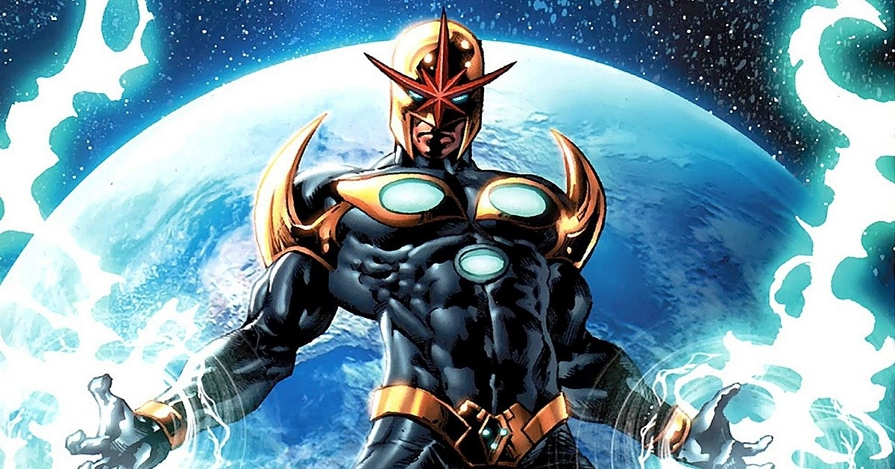
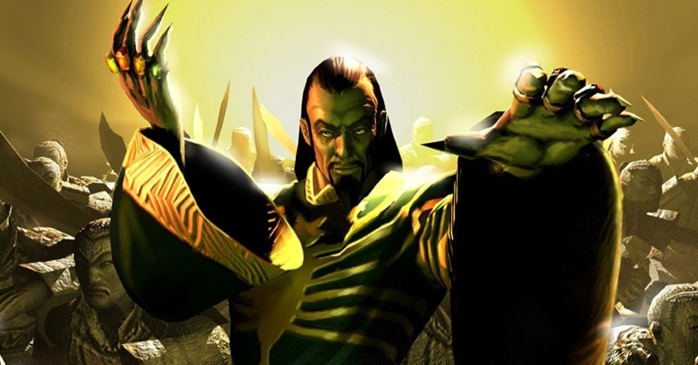
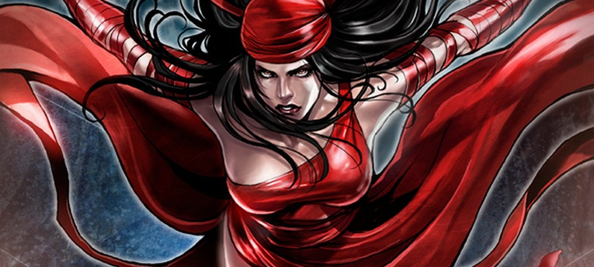
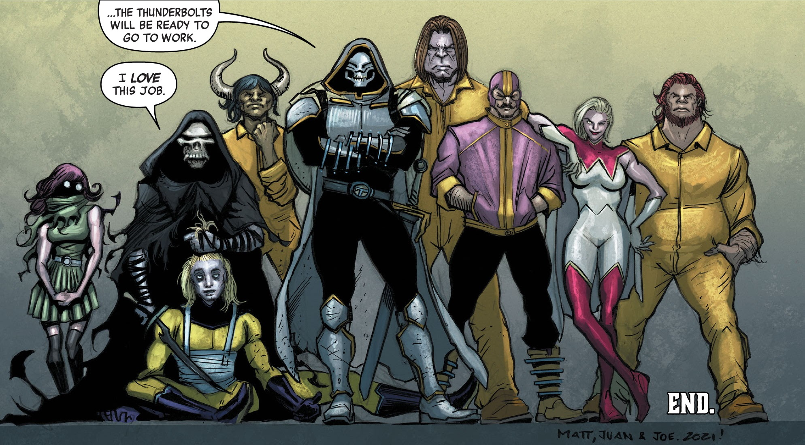
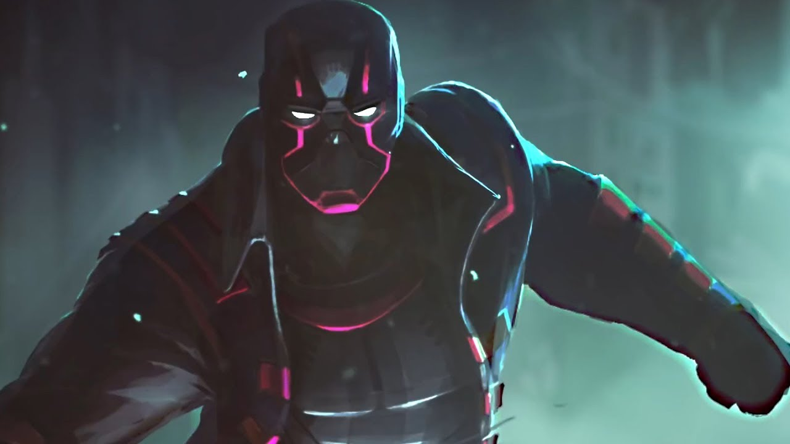
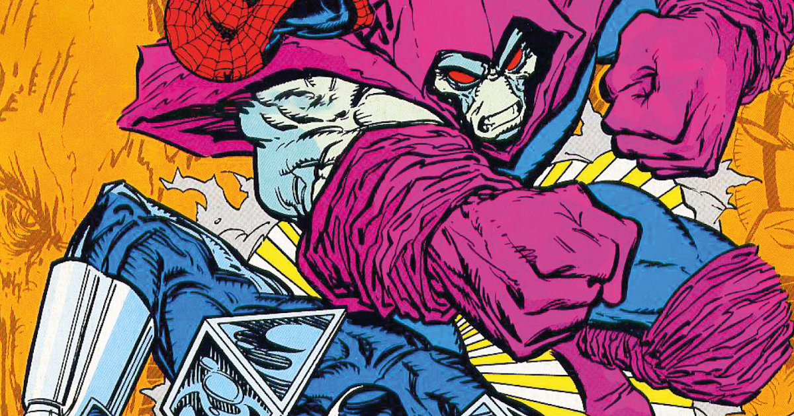

Mandarim e outros 5 personagens esquecidos da Marvel que gostaríamos de ver no cinema ou no streaming
O vilão de Shang-Chi e a Lenda dos Dez Anéis é um dos diversos personagens da Marvel que merecem mais destaque na Fase 4 do Universo Cinematográfico Marvel.
Os quadrinhos da Marvel foram responsáveis por trazer centenas de personagens ao mundo e, por isso, não seria surpreendente que muitos destes heróis ou vilões fossem perdidos em meio a tantas edições. Sem dúvidas, todos os fãs das HQs têm um favorito que foi esquecido pelo estúdio ou que, até mesmo tiveram participação em séries e filmes mas não se fazem mais presentes nas telas. Por isso, o AdoroCinema separou alguns nomes que merecem destaque e atenção nessa nova fase do Universo Cinematográfico Marvel.
NOVA
Richard Rider é o nome real por trás de Nova, conhecido popularmente como o “Foguete Humano”. O personagem foi criado em setembro de 1976 por Marv Wolfman e John Buscema, em uma época em que a Marvel começou a investir e explorar cada vez mais em heróis espaciais que se destacavam de grupos famosos como Vingadores e X-Men. Com a grande popularidade de Nova, o personagem chegou a ter seu filme solo ventilado por Kevin Feige, com a promessa de que finalmente chegaria aos cinemas, mas desde 2018 não há atualizações concretas sobre o andamento do projeto.
MANDARIM
Em 2013, o Universo Cinematográfico Marvel nos “apresentou” o personagem Mandarim, um dos vilões mais antigos da empresa. A palavra está entre aspas porque, em Homem de Ferro 3, o personagem de Ben Kingsley era, na verdade, um ator pago para fingir ser o famoso vilão. Agora, em Shang-Chi e a Lenda dos Dez Anéis, Mandarim de fato aparece e tem um importante papel interpretado por Tony Leung. Recentemente, com o novo trailer do filme, os fãs tiveram um vislumbre do que esperar do antagonista na Fase 4 do UCM.
ELEKTRA
Interpretada por Jennifer Garner nos cinemas, Elektra está na lista de um dos filmes que a Marvel gostaria de esquecer. Ela é uma das personagens mais perigosas dos quadrinhos devido às suas incríveis habilidades em artes marciais, unidas ao uso da lâmina mortal de Okinawa. A anti-heroína tem um passado sombrio e suas ações são motivadas pelo seu desejo de vingança, fazendo com que Elektra seja uma forte candidata a ganhar um espaço para sua história nas telonas, dessa vez, com orgulho e a execução louvável similar às recentes produções do estúdio. Marvel, eu nunca te pedi nada!
THUNDERBOLTS
Em uma explicação prática, os Thunderbolts formam um grupo que se assemelha à premissa do Esquadrão Suicida. Eles são um conjunto de supervilões reformados, conhecidos como Mestres do Terror, que se tornam heróis após o desaparecimento dos Vingadores depois do massacre. Este é um grupo que deu novas oportunidades a inúmeros heróis, incluindo o Soldado Invernal e Viúva Negra e, com o avanço das histórias dos Vingadores na UCM, que atualmente exploram o mundo após o “blip” causado por Thanos, seria o momento ideal para trazer os Thunderbolts à tona.
RADICAL
Radical (originalmente chamado Night Thrasher), também conhecido como Dwayne Michael Taylor, é basicamente a versão Marvel do Batman. Seus pais foram assassinados em sua frente, ele é rico e lidera uma gangue de super-heróis nomeada como “Os Novos Guerreiros”. Após sua trágica perda, seus tutores Chord e Tai apoiaram sua decisão em fazer com que os criminosos pagassem por seus crimes, criando assim o alter ego Radical. Com o seu esquadrão de heróis e triste história que motivou sua jornada heróica, o personagem poderia ganhar um filme solo ou, quem sabe, uma série acompanhando suas aventuras em grupo.
SONÂMBULO
Outro herói que merece mais atenção é o Sonâmbulo. Ele teve uma impressionante série nos quadrinhos da Marvel e confessamos que já estamos com saudades dele. Nas HQs, ele divide um corpo com Rick Sheridan. Nesse caso, isso significa que quando Rick dorme, o Sonâmbulo se levanta, com o objetivo de proteger sua dimensão conhecida como Mindscape. Com essa incrível história a ser explorada em telas grandes, os fãs do Universo Cinematográfico da Marvel vão vibrar com a originalidade do personagem.
Fonte